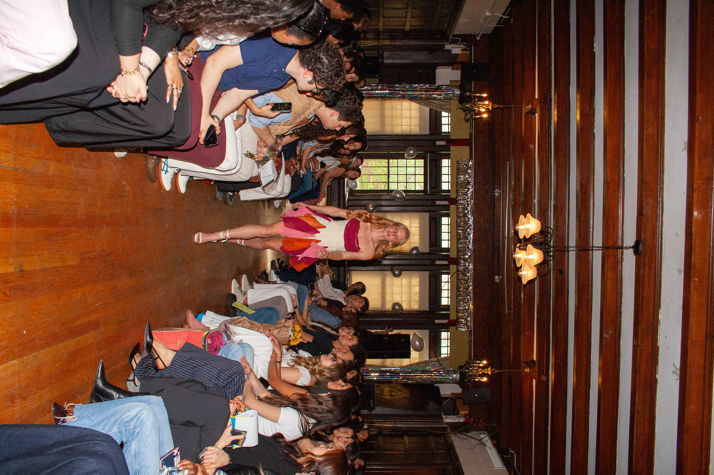

About Me
My name is Sarah Fischer, a current student at the University of Pennsylvania. I will graduate with my BSE in Mechanical Engineering and a minor in Fine Arts. I have always been fascinated with creating and engineering since a young age. My goal is to be able to integrate my strong modeling skills with my passion for design to create a seamless blend between cutting edge engineering and creativity.